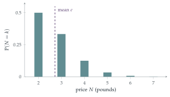

STEP I 1996, Question 13
Read the question before you go on. It is in the STEP Support Programme’s question database: step.maths.org/questions/96-s1-q13
The hook
A strange way to sell a stamp: the buyer keeps guessing which cup hides it, with one more cup each round, and pays one pound per cup on the table when he first guesses wrong. On average he pays \(\pounds e\), about \(\pounds 2.72\).
The number \(e\) appears in probability with uncanny frequency: the chance that nobody gets their own shirt (Section 9.8), the secretary problem (Section 12.12), the Poisson distribution. This question is perhaps the simplest of all its appearances, and it turns out to have exactly the same distribution as another famous puzzle: how many random numbers between \(0\) and \(1\) must you add before the total exceeds \(1\)? On average, \(e\).
Before you start
For \(N = 4\), what must happen? With what probability?
Jim must guess correctly with \(2\) cups (probability \(\frac12\)) and with \(3\) cups (\(\frac13\)), then fail with \(4\) cups (\(\frac34\)). So \(\mathrm{P}(N = 4) = \frac12\cdot\frac13\cdot\frac34 = \frac{3}{4!} = \frac18\).
Working it through
Stage 1 The distribution
For \(N = k\) (with \(k \geq 2\)), Jim succeeds with \(2, 3, \ldots, k - 1\) cups and fails with \(k\): \[\mathrm{P}(N = k) = \frac12\cdot\frac13\cdots\frac{1}{k - 1}\cdot\frac{k - 1}{k} = \frac{k - 1}{k!}.\] (Check: \(\frac{1}{2!} + \frac{2}{3!} + \frac{3}{4!} + \cdots = \sum_{k \geq 2}\bigl(\frac{1}{(k-1)!} - \frac{1}{k!}\bigr) = 1\), a telescoping sum.)
Stage 2 The expectation
Simplify \(k\cdot\frac{k - 1}{k!}\). What series do you get?
\[\mathrm{E}(N) = \sum_{k \geq 2}\frac{k(k - 1)}{k!} = \sum_{k \geq 2}\frac{1}{(k - 2)!} = \frac{1}{0!} + \frac{1}{1!} + \cdots = e. \qed\]
Stage 3 The variance
Find \(\mathrm{E}(N^2)\) by writing \(k^2 = k(k - 1) + k\), or by simplifying \(\frac{k^2(k-1)}{k!}\) directly.
\[\mathrm{E}(N^2) = \sum_{k \geq 2}\frac{k^2(k - 1)}{k!} = \sum_{k \geq 2}\frac{k}{(k - 2)!} = \sum_{j \geq 0}\frac{j + 2}{j!} = \sum_{j \geq 1}\frac{1}{(j - 1)!} + 2\sum_{j \geq 0}\frac{1}{j!} = e + 2e = 3e.\] So \(\mathrm{Var}(N) = 3e - e^2 = e(3 - e) \approx 0.766\).■

Looking back
Products of probabilities. A sequence of independent successes followed by a failure gave a product that collapsed to \(\frac{k-1}{k!}\).
Cancel factorials. Multiplying by \(k\) or \(k^2\) and cancelling turned the sums into the exponential series.
\(\mathrm{E}(N^2)\) via a shift. Re-indexing with \(j = k - 2\) split the sum into two copies of \(e\).
What’s really going on
The same distribution, in disguise
Choose random numbers \(U_1, U_2, \ldots\) uniformly from \([0, 1]\), and let \(M\) be the number needed for their sum to exceed \(1\). The probability that the first \(k\) numbers add up to less than \(1\) is the volume of the region \(\{u_1 + \cdots + u_k < 1, u_i \geq 0\}\), which is \(\frac{1}{k!}\) (a triangle of area \(\frac12\), a tetrahedron of volume \(\frac16\), and so on). So \[\mathrm{P}(M > k) = \frac{1}{k!}, \qquad \mathrm{P}(M = k) = \frac{1}{(k - 1)!} - \frac{1}{k!} = \frac{k - 1}{k!},\] exactly the distribution of \(N\). In both problems \(\mathrm{P}(N > k) = \frac{1}{k!}\): for the cups, that is the probability of \(k - 1\) correct guesses in a row. Using \(\mathrm{E}(N) = \sum_{k \geq 0}\mathrm{P}(N > k)\) (a formula from Section 9.9) gives \(\mathrm{E}(N) = \sum\frac{1}{k!} = e\) in one line.
Why \(e\) keeps appearing
Whenever a probability involves \(\frac{1}{k!}\), whether from \(k\) objects in a particular order, \(k\) successive events with probabilities \(\frac12, \frac13, \ldots\), or the volume of a simplex, sums over \(k\) produce the exponential series. Derangements (Section 9.8) gave \(\sum\frac{(-1)^k}{k!} = e^{-1}\); here we have \(\sum\frac{1}{k!} = e\). And limits of the form \(\bigl(1 - \frac1n\bigr)^n \to e^{-1}\), which come from many independent unlikely events, explain \(e\) in the secretary problem and the Poisson distribution.
The “sum exceeds \(1\)” problem gives a way to estimate \(e\) by experiment: generate random numbers, count how many are needed to exceed \(1\), repeat many times and average. It is a cousin of Buffon’s needle (Section 12.20), which estimates \(\pi\). Such Monte Carlo methods, named after the casino, use random sampling to estimate quantities that are hard to compute directly; they are now used throughout science, from particle physics to finance, mostly for integrals in many dimensions.
The thinking skill
When an expectation is a sum involving factorials, simplify the terms until a standard series (exponential, geometric, binomial) appears.
At university, generating functions systematise this: the probability generating function \(\mathrm{E}(t^N)\) packages the whole distribution, and its derivatives at \(t = 1\) give the mean and variance.
Try this next
The generating function. Show that \(\mathrm{E}(t^N) = 1 + (t - 1)e^t\), and use it to find \(\mathrm{E}(N)\) and \(\mathrm{E}(N(N - 1))\).
The tail formula. Prove that \(\mathrm{E}(N) = \sum_{k \geq 0}\mathrm{P}(N > k)\) for a random variable taking non-negative integer values, and use it to find \(\mathrm{E}(N)\) in one line.
Starting with one cup. If the game starts with one cup (which Jim cannot get wrong), how does the distribution change? What is the expected price?
The simplex. Show that the volume of \(\{u_1 + u_2 + u_3 < 1, u_i \geq 0\}\) is \(\frac16\), and use induction to show the \(k\)-dimensional version is \(\frac{1}{k!}\).
Further reading
Eli Maor, e: The Story of a Number (Princeton University Press). The history of \(e\), including its appearances in probability.
Geoffrey Grimmett & Dominic Welsh, Probability: An Introduction (Oxford University Press), on generating functions.
Paul Nahin, Digital Dice (Princeton University Press). Probability puzzles solved by Monte Carlo simulation.